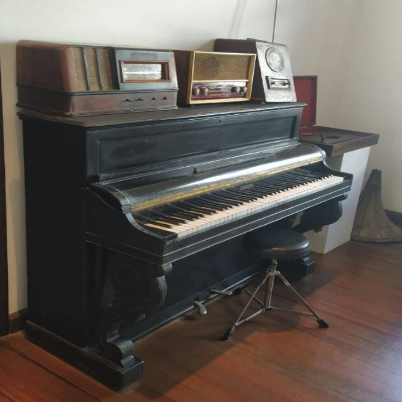
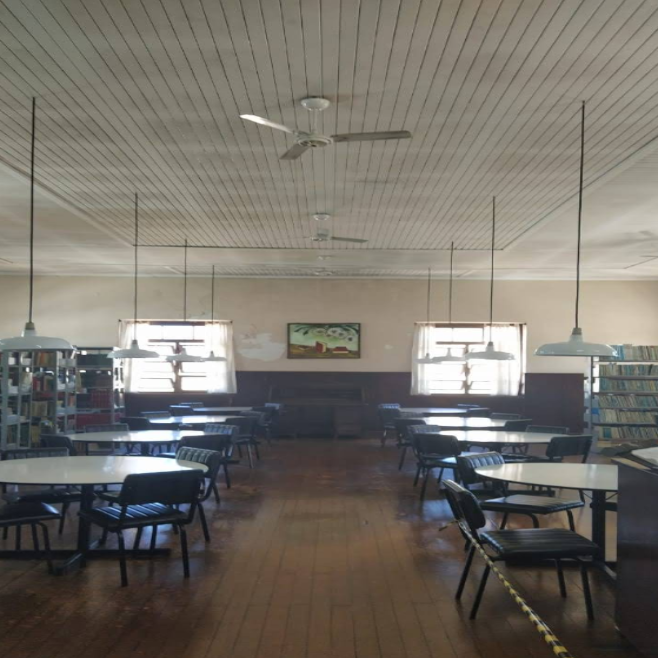
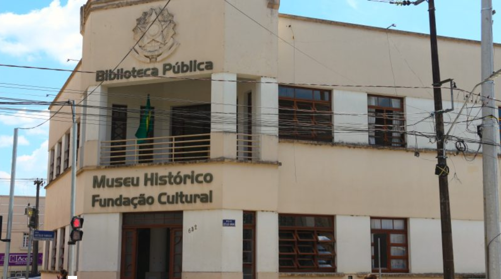
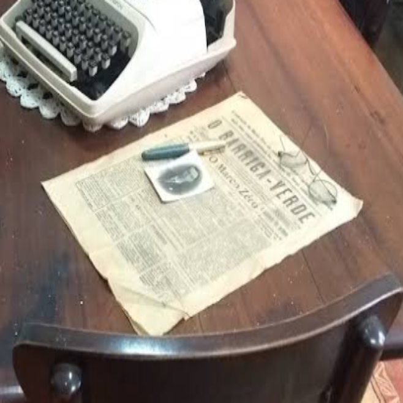

Museu Histórico Orty de Magalhães Machado
Descubra a rica história de Canoinhas através de nosso acervo permanente, com peças que contam a trajetória da região desde seus primórdios até os dias atuais.
O museu oferece exposições, visitas guiadas e atividades educativas para escolas e grupos.
História do Museu
Fundado em 1985, o Museu Histórico Orty de Magalhães Machado tem como missão preservar, estudar e difundir a memória histórica e cultural da cidade de Canoinhas e região. Seu acervo conta com objetos, documentos e fotografias que remontam ao século XIX, abrangendo desde a colonização até os dias atuais.
Exposições
Permanentes
- Acervo indígena e arqueológico
- Objetos da colonização europeia
- Fotografias históricas da cidade
- Mobiliário e utensílios do século XIX e XX
Temporárias
O museu recebe regularmente exposições temporárias de artistas locais, regionais e nacionais, trazendo diversidade cultural e novas perspectivas históricas.
Galeria de Imagens




Visitas e Atividades
O museu oferece visitas guiadas para grupos escolares e turistas, mediante agendamento. Também são realizadas oficinas educativas, palestras e eventos culturais ao longo do ano.
Horários
- Terça a Sexta: 9h às 17h
- Sábados: 10h às 14h
- Domingos e feriados: Fechado
Confirme horários por telefone.
Curiosidades
Você sabia que o museu está localizado em um prédio histórico tombado pelo patrimônio municipal? Sua arquitetura preserva características originais do início do século XX.